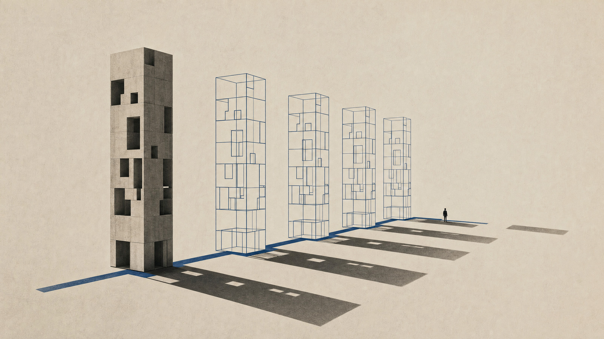
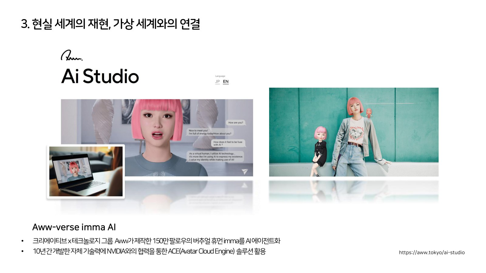
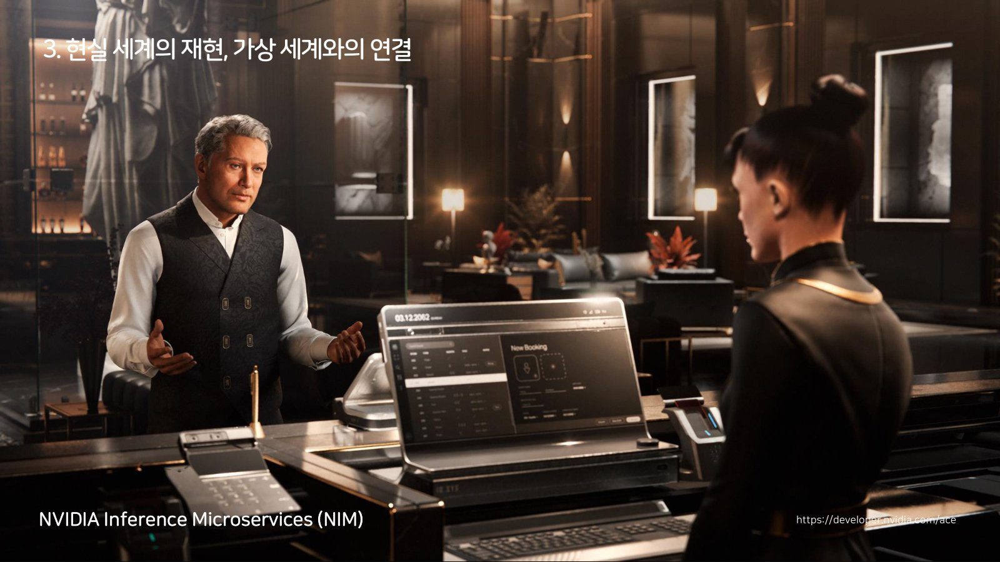
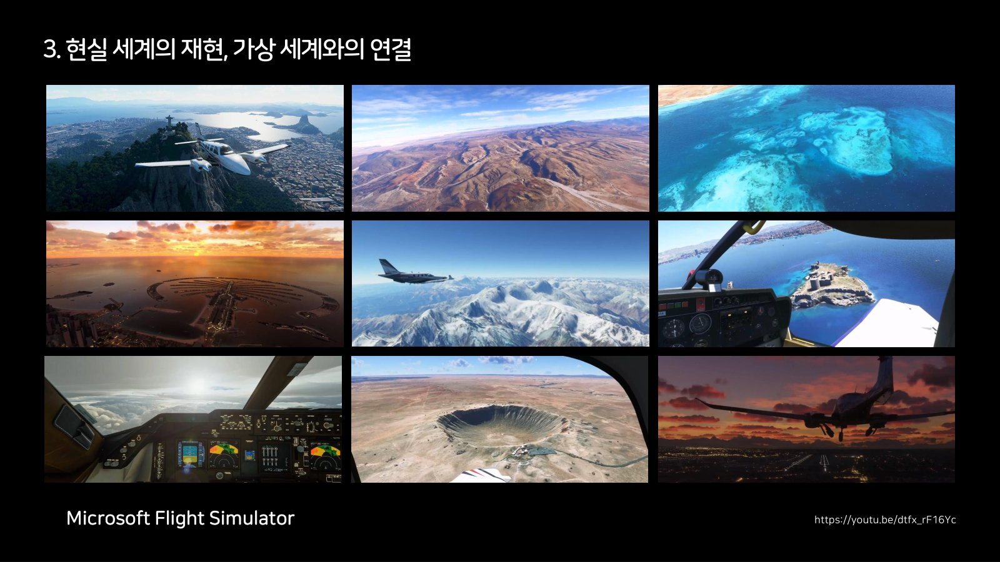
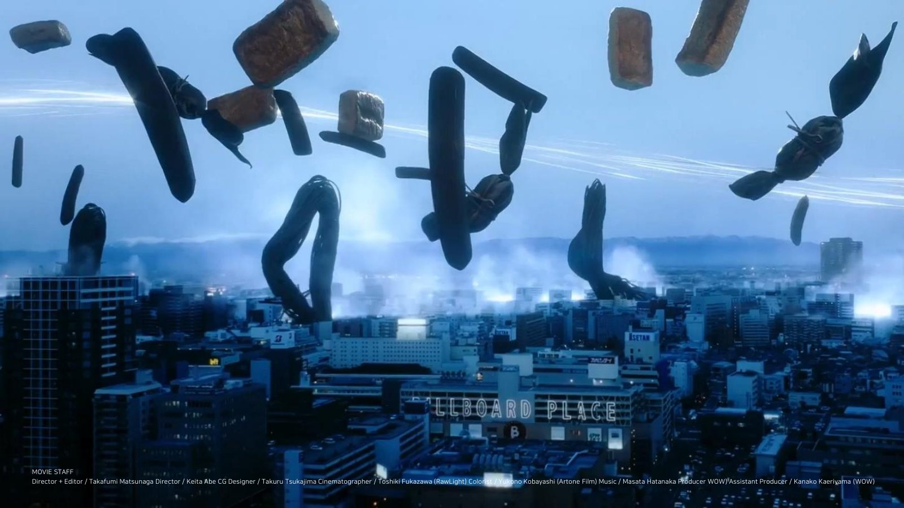
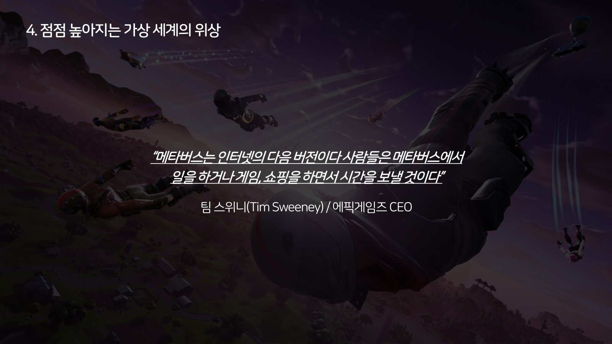
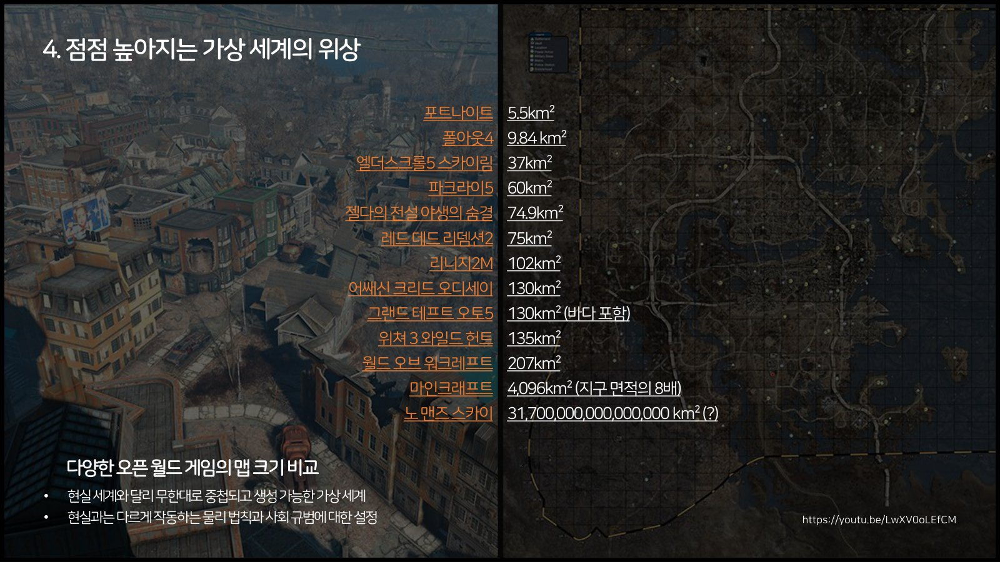
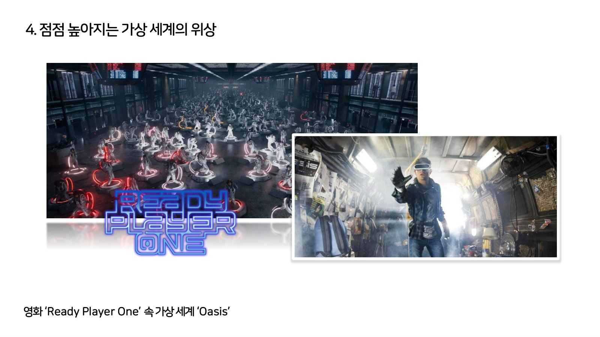

가상 세계는 더 이상 현실의 보조 수단이 아니다자율 세계, 스스로 규칙을 만드는 세계의 등장PART 2

가상 세계는 오랫동안 현실을 흉내 내는 공간이었고, 현실에서 남는 시간을 소비하는 공간이었다. 2024년 여름 부천 무대에서 나는 그 관계가 뒤집히고 있다고 말했다. 현실이 통째로 디지털로 들어오고, 그 안에서 일과 돈과 배움이 돌기 시작하면, 가상 세계는 보조 수단이 아니라 또 하나의 본편이 된다. 이 글은 그 발표의 가운데 토막을 2년 뒤에 다시 정리한 것이다.
시리즈 안내 : 이 시리즈는 2024년 7월 7일 부천국제판타스틱영화제 BIFAN+ 컨퍼런스에서 한 발표 "자율 세계의 등장과 새로운 창작 환경"을 2년 뒤에 1인칭으로 다시 정리한 것이다. 이 글은 세 편 중 두 번째다.
01무대 위의 반전 하나
앞 편에서 나는 스스로 살아가는 세계와 그 안의 존재들을 소개했다. 이번에는 방향을 뒤집는다. 가상이 얼마나 정교해졌는가가 아니라, 현실이 얼마나 깊숙이 가상으로 들어와 있는가.
그 무렵 가상 세계는 이미 영화나 광고, 게임을 만드는 사람들만의 판이 아니었다. 큰 IT 기업들이 저마다 판돈을 걸고 자리를 다투는 곳이 되어 있었다. 그날 내가 첫 사례로 꺼낸 것도 그중 하나였다.
이야기를 연 것은 엔비디아였다. 그런데 하필 그 대목에서 화면이 어긋났다. 나는 진행을 도와주던 분께 잠깐 뒤로 갈 수 있겠느냐고 물었고, 결국 그 장은 건너뛴 채 말을 이었다. 진짜와 만들어진 것을 구별하지 못했다는 이야기를 꺼내려던 참에 화면이 먼저 어긋난 셈이다.
2021년 개발자 컨퍼런스 키노트가 끝난 뒤, 엔비디아는 그날 무대에 등장했던 CEO 젠슨 황의 모습 일부가 사실은 자사 기술로 구현된 버추얼 휴먼이었다고 공개했다. 발표를 지켜본 전 세계가 눈치채지 못했다. 나는 이 반전이 좋은 척도라고 생각했다. 진짜와 만든 것의 경계가 어디까지 왔는지를, 논문이 아니라 하나의 무대 연출이 증명해 버린 것이다.
같은 회사는 젠슨 황의 지식과 경험을 학습한 귀여운 캐릭터 모양의 아바타도 선보였다. 자연어로 대화할 수 있는, 말하자면 그 사람의 일부를 담은 에이전트였다. 나는 이것을 AI 에이전트 시장의 본격적인 시작 신호로 읽었다. 발표하던 2024년에 엔비디아는 기업 시가총액 1위에 막 올라선 참이었고, 그 배경에는 이 방향에 대한 기대가 깔려 있다고 나는 읽었다.
엔비디아의 기술이 자사 데모 안에서만 굴러가고 있던 것도 아니었다. 함께 띄운 장 하나에는 팔로워 150만 명을 가진 버추얼 휴먼 imma가 있었다. 제작사 Aww는 10년 동안 쌓은 자체 기술에 엔비디아의 아바타 솔루션을 얹어 이 캐릭터를 대화하는 AI 에이전트로 바꿔 놓았다. 화면 한쪽 채팅 캡처에서 캐릭터는 자신이 AI 기술을 활용하고 있으며 그러면서도 자기 정체성을 소중히 여긴다고 답하고 있었다. 기술이 데모를 떠나 이미 팔리고 있는 IP 안으로 걸어 들어간 장면이었다.

02게임 속에서 산 물건이 집으로 온다면
그날 내가 붙인 관찰은 이랬다. 귀여운 캐릭터가 사람다운 방식으로 말을 걸어 왔기 때문에 그 뒤에 있는 기술은 전부 가려져 보이지 않는다고. 가려진 쪽을 열면 조립 라인이 하나 있다. 사람의 말을 음성 인식이 글자로 바꾸고, 작은 언어 모델이 답을 만들고, 음성 합성이 그 답을 다시 소리로 바꾸고, 그 소리에 맞춰 얼굴이 움직인다. 텍스트가 음성이 되고 음성이 표정이 되는 과정을 낱낱의 기술이 하나로 묶여 해내기 시작한 참이었다. 돌아가는 자리도 개인의 PC와 클라우드 양쪽에 걸쳐 있었다.
엔비디아는 여기에 더해 AI 모델을 기존 서비스에 이어 붙이는 마이크로서비스를 내놓고 있었다. 나는 그 자리에서 상상 하나를 던졌다. 게임 엔진으로 만든 영화적인 경험 안에서, 주인공이 상점에 들어가 AI 점원과 대화를 나누고 물건을 산다. 그런데 그 물건이 진짜로 여러분의 집에 택배로 배송된다면. 우리는 어디까지를 스토리텔링이라고 불러야 할까.

그때는 사고 실험이었다. 2년이 지난 지금 이 상상은 절반쯤 관용어가 됐다. 에이전트가 사람 대신 검색하고 비교하고 결제까지 하는 흐름은 이제 '에이전트 커머스'라는 이름으로 표준이 논의되는 단계에 와 있다. 이야기 속 점원과 현실의 물류가 한 줄로 이어지는 데 필요한 부품이 그사이 하나씩 채워진 셈이다. 질문만 그대로 남아 있다. 어디까지가 이야기인가.
03지구를 통째로 복제하는 일
현실이 가상으로 들어오는 가장 큰 단위는 지구 그 자체다. 마이크로소프트 플라이트 시뮬레이터는 지구 전체를 3D로 담았고, 위성 정보와 클라우드를 바탕으로 지금도 갱신되고 있다. 지구에서 우주쇼 같은 이벤트가 벌어지면 그 안에서도 같은 일이 동시에 일어난다. 나는 이 사례에서 규모보다 접근성이 중요하다고 말했다. 이런 데이터가 연구자의 전유물이 아니라 게임 타이틀 하나 값으로 누구에게나 열려 있다는 사실 말이다. 실은 논지라고 할 것도 없이, 그날 객석을 향해 지금 사서 해보시라고 권했다. 사람들은 실제 비행기의 조종석을 흉내 낸 컨트롤러를 사고 화면을 여러 대 세워 가며 그 가상의 지구에서 시간을 보내고 있었다.

더 인상적인 쪽은 일본이었다. 국토교통성의 '프로젝트 플라토'는 도시의 3D 데이터를 공공재로 풀어놓는 사업이다. 2027년까지 500개 도시가 목표였고, 그 연도가 이제 내년이다. 데이터는 누구나 무료로 내려받아 쓰던 툴에서 열 수 있다. 겉모습만 닮은 모형이 아니라는 점이 중요했다. 그 안에는 현실의 데이터가 실제로 연동되어 있고, 갱신 주기에 따라서는 현실과 싱크가 맞춰진 공간이라고 볼 수 있다.
이 데이터를 3D 타일로 바꿔 주는 서비스를 한 겹 끼우면, 언리얼이든 유니티든 창작자들이 이미 쓰고 있는 도구 안으로 도시가 그대로 들어온다. 공공 데이터가 행정의 서랍에 머물지 않고 창작 파이프라인 끝까지 내려온 셈이다.
실제로 이 데이터로 만든 창작물을 겨루는 공모전이 열렸다. 내가 튼 영상 하나는 정밀하게 재현된 도시 위를 어묵과 꼬치가 돌아다니는 화면이었다. 나는 지역 특산물 광고인 것 같다고만 말했다. 확실히는 몰랐다. 다만 사례를 설명하던 말투를 거기서 잠깐 멈추고 굉장히 멋진 작품이라고, 너무 감동적이었다고 말한 것은 그 영상 앞에서였다. 더 놀라운 것은 그 영상의 제작 과정이 튜토리얼로 함께 공개되어 있다는 점이었다. 결과물을 열고, 만드는 법까지 같이 열어 둔 것이다.

그로부터 두 해 뒤에 나는 이 공공 데이터를 직접 내려받아 도시 하나를 세우고 그 안에 에이전트들을 살게 해 보게 되는데, 그날 무대에서는 아직 남의 나라 사업 이야기였다. 재난이 잦은 일본의 입장에서는 기록과 보존이라는 동기도 함께 있었을 것이다. 도시를 잃기 전에 도시를 복제해 두는 일. 창작의 재료와 방재의 기록이 같은 데이터라는 점이 나에게는 오래 남았다.
04디지털 트윈, 에이전트의 일터
현실을 복제한 세계에 이름이 붙은 지는 오래됐다. 디지털 트윈. 그 말을 처음 띄운 장에 그려져 있던 것은 공장이 아니라 지구였다. 위성과 해양, 생태계와 대기의 관측치가 한쪽에서 들어가고, 반대쪽에서 풍력 발전량 예측과 이상 기후 예측과 재난 완화가 나온다. 장표 아래쪽에는 7일치 예보를 0.25초에 내놓는다는 표기와 10만 배 속도 향상이라는 표기가 나란히 붙어 있었다. 바로 앞에서 이야기한 도시 보존의 동기와 이 그림은 한 줄로 이어진다. 기록해 두는 일에서 미리 돌려 보는 일로 한 칸 넘어간 것이다.
산업 쪽에서 가장 빠르게 자리를 잡은 것은 스마트 팩토리였다. 띄워 둔 화면은 좌우로 나뉘어 있었다. 왼쪽은 현장에 깔린 수많은 카메라와 센서, 오른쪽은 그것을 시각화한 데이터. 현실에서 사고가 나면 가상에서 같은 사고가 그대로 벌어지고, 지구 반대편에 떨어져 있는 사람도 그 공간을 눈으로 보는 것처럼 이해하고 지시를 내릴 수 있다. 여기서 한 걸음 더 나간 이야기를 나는 덧붙였다. 이 안에서 일하는 AI 에이전트들에게 역할을 주는 데 전문 소프트웨어가 필요하지 않을 수 있다고. 모바일 메신저에 문장 하나를 보내는 것으로도 된다고 말이다.

지금 돌아보면 이 대목이 가장 많이 맞았다. 에이전트에게 일을 시키는 표준 인터페이스는 전용 콘솔이 아니라 대화창이 됐고, 메신저에 붙은 에이전트가 일상의 업무 창구로 쓰인다. 2024년에는 공장 사례를 설명하려고 곁들인 한 문장이었는데, 남은 것은 그 한 문장 쪽이고 공장 그림이 배경으로 물러났다.
로봇 이야기도 보탰다. 네 발로 걷는 로봇 스팟이 걷는 법을 배우는 곳은 현실이 아니라 물리 법칙이 구현된 시뮬레이션이다. 그 안에서 수없이 넘어지며 배운 다음, 결과를 몸에 담아 현실로 나온다. 그 학습장의 이름은 엔비디아 아이작 랩이었다. 앞에서 본 지구 규모 트윈을 돌리던 것과 같은 계보라는 뜻이다. 가상에서 배우고 현실에서 일하는 순서다.
이런 세계들이 서로 이어지려면 공통의 파일 형식이 필요하다. 애플, 엔비디아, 픽사 같은 회사들이 USD라는 포맷의 표준화에 함께 나선 것은 그래서 의미가 있었다. 장표에 그려진 그림에는 이 포맷 하나로 모여드는 도구 아이콘이 수십 개 붙어 있었다. 3ds Max, 블렌더, 후디니, 마야, 시네마4D. 나는 객석을 향해 익숙한 툴이 많이 보이실 거라고 말했다. 표준화라는 말은 멀리 있는 이야기처럼 들리지만, 실제로는 이미 각자의 작업 폴더 안에 들어와 있는 이야기였다.
이 대목에서 꺼낸 것은 HBO의 드라마 웨스트월드였다. 기차를 타고 들어가는 테마파크, 그 안에서 AI 로봇들이 자율적으로 생활하는 세계. 현실이 미러링되고, 실시간으로 연동되고, AI로 증강된 세계에 캐릭터와 세계관이라는 IP가 더해진다면 어떻게 될까. 그 상상 속 테마파크가 현실 쪽으로 다가오고 있다는 것을 나는 그때 체감했다. 발표에서는 이렇게 맺었다. "우리는 더 이상 하나의 장르로서의 SF가 아닌, 삶으로서의 SF를 마주하게 될지도 모릅니다."
그리고 검은 화면에 문장 하나만 띄운 장으로 3장을 닫았다. 장표에 적힌 문장은 이랬다. "중요한 사실은 이렇게 현실로부터 재현되고 연결된 세계는 새롭게 등장하는 디지털 가상 세계 존재들의 활동에 최적의 환경이라는 점". 앞에서 늘어놓은 사례들, 버추얼 휴먼과 지구를 담은 시뮬레이터와 공공 도시 데이터와 공장과 로봇과 파일 포맷은 전부 이 한 문장으로 모인다. 사람이 살기 좋아졌다기보다, 그들이 활약하기 좋아진 공간이라는 뜻이다.
여기에 질문 세 개를 붙였다. 우리는 그 공간에서 그들과 경쟁을 해야 할까, 협력을 해야 할까, 아니면 그들을 적극적으로 이용해야 할까. 답을 정해 두고 던진 질문은 아니었다. 지금도 나는 정하지 못한 것 같다.
05시간 낭비의 자리였던 곳
여기까지가 인프라의 이야기라면, 남은 것은 위상의 이야기다. 발표 중간에 나는 내가 디지털 가상 세계라는 표현을 너무 많이 쓰고 있다는 것을 스스로 짚었다. 몇 년 전까지 사람들이 훨씬 자주 들었을 말은 메타버스였다. 에픽게임즈의 팀 스위니는 메타버스를 인터넷의 다음 버전이라고 불렀다. 사람들이 그 안에서 일하고 게임하고 쇼핑하며 시간을 보내게 되리라는 것이다. 나는 그 문장을 소개만 하고 지나가지 않았다. 머지않은 상황이라고 생각한다는 판정을 그 자리에서 붙였다.

돌이켜 보면 그 판정은 반쯤 맞았다. 일하고 게임하고 쇼핑하는 시간이 화면 안으로 옮겨간 것은 맞는데, 통로가 달랐다. 메타버스라는 말 자체가 그사이 거의 폐어가 됐고, 그 자리를 채운 것은 헤드셋을 쓰고 들어가는 3차원 공간이 아니라 대화형 에이전트와 스트리밍이었다. 방향은 맞았고 매체를 틀렸던 것 같다.
내가 근거로 든 것은 다섯 개의 기술이었다. 실시간 렌더링, 디지털 트윈으로서의 데이터, 생성 AI 모델, 블록체인과 스마트 컨트랙트, 그리고 표준화된 포맷과 도구. 각각은 이미 앞에서 하나씩 확인한 것들이다. 그런데 다섯 개를 세워 놓자마자 나는 그 목록의 한계를 인정했다. 이것 말고도 아주 많은 것이 있을 테고, 그중에는 기술이 아닌 부분도 분명히 많을 거라고 말했다. 다섯 개가 결론처럼 굳는 것이 싫었던 것 같다.
위상의 변화는 말투에서 먼저 드러난다. 예전에는 게임을 하고 있으면 시간 낭비라는 말을 들었다. 공부 안 하고 왜 딴짓하느냐는 말. 그런데 이제는 게임 안에 가서 돈을 벌어야 하고, 유튜브에 가서 실력을 쌓고 지식을 얻어야 하는 시대가 되어 가고 있다. 잉여의 공간이라 불리던 곳에서 노동과 학습이 일어난다. 가상 세계의 기술과 경험을 현실을 재현하는 보조 수단으로, 남는 시간을 태우는 소비로 묶어 두던 시절은 끝나 가고 있었다. 거기서 열리는 기회가 사회와 경제, 정치, 문화, 예술까지 현실의 거의 모든 영역을 건드리게 될 거라고 나는 적어 두었다.
그 뒤에 덧붙인 전망이 이 절에서 가장 멀리 나간 대목이다. 수십 년, 수백 년, 수천 년에 걸쳐 만들어진 현실의 가치들이 빠른 속도로 저 안으로 전이해 갈 것이라고 나는 말했다. 그렇게 되면 현실에서 보내는 시간과 노력, 그 안에서 쌓아 가는 명성이나 가치의 비중이 두 세계 사이에서 크게 구분되지 않는 상태에 가까워지지 않겠느냐고. 그 일은 절반쯤 일어났다. 온라인에 쌓은 평판이 현실의 경력과 사실상 같은 통화로 쓰이는 것은 맞다. 다만 별도의 가상 세계가 생겨서 그렇게 된 것은 아니다. 내가 그린 것은 이동이었는데 실제로 벌어진 것은 경계가 흐려지는 쪽이었던 셈이다.
06무한이라는 크기
크기도 이미 현실을 넘어섰다. 인기 오픈월드 게임들의 맵 면적을 우리가 아는 단위로 환산해 한 장에 늘어놓은 장표가 있었다. 맨 위가 포트나이트의 5.5제곱킬로미터다. 그 좁은 섬에 백 명이 들어가 한 명이 남을 때까지 싸운다. 아래로 폴아웃4, 엘더스크롤5 스카이림, 파크라이5, 젤다의 전설 야생의 숨결, 레드 데드 리뎀션2, 리니지2M, 어쌔신 크리드 오디세이, 그랜드 테프트 오토5, 위쳐3 와일드 헌트, 월드 오브 워크래프트가 차례로 내려간다. 여기까지는 수십에서 수백 제곱킬로미터 사이, 한 칸씩 걸어 올라가는 정도의 차이다. 그러다 마인크래프트에서 4,096제곱킬로미터로 뛴다. 장표에 나란히 적힌 '지구 면적의 8배'라는 설명과는 잘 맞지 않는 숫자다. 그리고 맨 아래 칸에서 단위가 무너진다. 노 맨즈 스카이, 3경 1,700조 제곱킬로미터. 그 숫자 뒤에는 물음표까지 붙어 있었다.

같은 장 왼쪽 아래에는 두 줄이 더 적혀 있었다. 현실과 달리 무한대로 중첩되고 생성될 수 있는 가상 세계, 그리고 현실과는 다르게 작동하는 물리 법칙과 사회 규범에 대한 설정. 지금까지 크기 이야기를 했지만 두 줄의 무게는 뒷줄에 있다. 세계를 늘리는 일보다 그 안의 규칙을 정하는 일이 어렵다. 물리 법칙만이 아니라 사회 규범까지 누군가 설정한다는 뜻이기 때문이다. 세계가 스스로 규칙을 만든다는 말의 무게도 결국 이 줄에 실려 있다.
노 맨즈 스카이는 그 숫자를 플레이 감각으로 바꿔 놓는다. 처음에 플레이어는 행성 하나를 받는다. 생성된 행성 하나인데 그 자체로 엄청나게 거대한 공간이다. 비행선을 타고 우주로 나가면 또 다른 행성을 만나고 또 다른 행성을 만나는데, 한번 가 봤던 행성을 다시 가 볼 확률은 굉장히 낮다. 6기가바이트의 설치 용량 안에서 절차적으로 생성되는 행성이 약 1,844경 개, 하나하나가 실제 크기다. 이 게임들을 다 합치면 우리가 아는 지구의 공간을 넘어선 지는 이미 오래고, 이런 공간은 지금도 무한히 생겨나고 있다.
여기에 생성 AI가 붙으면 만들어지는 속도의 문제도 사라진다. 발표 전날 나는 비트매직이라는 서비스의 오픈베타에 처음 참여해 봤다. 프롬프트를 적으면 장면과 사물만이 아니라 게임의 규칙까지 실시간으로 정의되는 물건이었다. 무대에서도 솔직하게 말했다. 게임 자체가 재미있지는 않았다. 그래도 프롬프트로 게임을 만든다는 장르를 우리가 앞으로 무수히 만나게 되리라는 직감이 들었다. 2년이 지난 지금, 텍스트로 세계를 즉석 생성하는 도구들은 여러 회사에서 상품이 됐다. 그날의 어설픈 베타는 방향만큼은 정확히 가리키고 있었다.
07오아시스 앞에서 바뀐 질문
이 흐름의 끝에 오래된 상상 하나가 서 있다. 레디 플레이어 원의 오아시스. 영화에 등장하는 미래의 기기는 그때 이미 우리가 살 수 있는 물건이었다. 메타 퀘스트와 애플 비전 프로. 영화 속 미래와 매장에 놓인 상품을 같은 줄에 놓고 이야기할 수 있는 상태였다는 뜻이다.
그런데 나는 화려한 몰입 장면 대신 다른 장면을 짚었다. 사람들이 직장에 출근해 자기 자리에 앉아 VR을 쓰고, 그 안에서 주어진 역할을 하며 때로는 괴로워하고 괴성을 지른다. 현실에서 쌓은 시간과 노력과 가치가 가상 세계 안의 중요도에 매몰되거나 종속된 채 살아가는 장면이다. 가상 세계의 가치가 현실과 같은 지위를 갖게 된다는 것은 낭만이 아니라 그런 무게까지 함께 온다는 뜻이다.

다만 이 영화를 어둡게만 읽지는 않았다. 이 세계관에서 사람들은 가상과 현실을 구분하거나 차등을 두지 않는다. 하나로 합쳐진 세계 안에서 어떻게 하면 조금 더 나은 존재가 되고 조금 더 나은 삶을 살 수 있을지를 실질적으로 궁리하게 된다. 이 영화가 그린 것은 무게만이 아니었다. 그 무게 안에서 어떻게 살 것인가 하는 고민도 같이 도착해 있었다.
그리고 마지막 장면. 나는 그 마지막 장면이 크게 남았다고 말했다. 우리가 알고 있는 인기 캐릭터들이 한자리에 다 등장해, 자기 세계를 위협하는 존재에 맞서 싸운다. 수많은 인기 IP가 한 화면 안에서 부딪친다. 그 화려한 전투의 뒤편에는, 현실에서 살아남으려고 기업에 충성하는 노동자들이 서 있다. 한 화면의 앞과 뒤가 그렇게 갈려 있었다.
그 장면 다음에 질문이 바뀐다. 지금까지 우리는 가상 세계에서 무엇을 경험하고 싶은가를 물어 왔다. 그 안에서 일하고 벌고 배우는 시대라면 물음은 이렇게 옮겨 간다. 나는 그 세계에서 무엇을 창조하는 존재이고 싶은가. 이것은 논리를 밟아 도착한 결론이라기보다 한 장면에서 받은 충격에서 나왔다. 그래서 단정하지 않고, 영화 주인공이 가진 생각이 지금 우리 시대에 던지는 메시지가 아닐까 하는 정도로 놓아 두었다.
그런데 바로 그 자리에서 생성 AI가 창작의 주체 자리를 두고 함께 서 있다. 창작자의 정체성에 대한 이야기를 다음 편에서 이어가겠다.